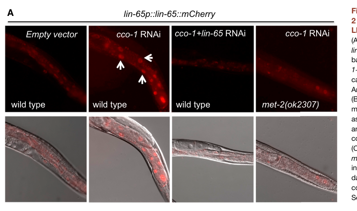

LIN-65 is an intrinsically disordered nuclear cofactor/scaffold for the histone H3K9 methyltransferase MET-2 (the C. elegans SETDB1 homolog), and is widely regarded as a functional analog of mammalian ATF7IP/MCAF1. Its best-characterized primary function is to promote MET-2 nuclear accumulation, stability, and assembly into perinuclear heterochromatin foci, thereby enabling robust H3K9 di-methylation (H3K9me2), repression of repeats and developmental genes, and perinuclear chromatin organization. LIN-65 physically associates with MET-2 and ARLE-14 in a heterochromatin module, and the foci behave like phase-separated condensates (dynamic, sensitive to 1,6-hexanediol). This cofactor role operates across several contexts including the timing of embryonic heterochromatin onset, prevention of somatic monoallelic expression, synMuvB/class B antagonism of Ras-driven vulval induction, and mitochondrial stress-induced chromatin reorganization supporting the mitochondrial unfolded protein response (UPR-mt) and longevity. The protein is largely low-complexity/unstructured with a predicted coiled-coil and a folded C-terminal domain, consistent with a multivalent assembly factor rather than a catalytic effector. LIN-65 translocates between cytosol and nucleus, with nuclear accumulation accompanying heterochromatin establishment and stress responses.
| GO Term | Evidence | Action | Reason |
|---|---|---|---|
|
GO:0005634
nucleus
|
IDA
PMID:27133166 Mitochondrial Stress Induces Chromatin Reorganization to Pro... |
ACCEPT |
Summary: LIN-65 was shown by direct assay (IDA) to localize to the nucleus. The publication PMID:27133166 demonstrates that LIN-65 functions as a "nuclear co-factor" that works with the histone methyltransferase MET-2 to mediate chromatin changes during mitochondrial stress. Nuclear localization is essential for its role in establishing H3K9me2 marks.
Reason: This annotation is well-supported by the evidence. The abstract of PMID:27133166
explicitly describes LIN-65 as a "nuclear co-factor" and the GOA entry uses
the qualifier "located_in" and "is_active_in" for the nucleus, both of which
are appropriate given LIN-65's function in mediating chromatin changes through
H3K9 di-methylation. Falcon deep research reinforces this beyond the UPR-mt
context: LIN-65 physically associates with MET-2 and is required for MET-2
nuclear enrichment and the formation of perinuclear heterochromatin foci in
embryos, accumulating into nuclear hubs together with MET-2 and ARLE-14.
Supporting Evidence:
PMID:27133166
Mitochondrial stress response activation requires the di-methylation of histone H3K9 through the activity of the histone methyltransferase met-2 and the nuclear co-factor lin-65.
file:worm/lin-65/lin-65-deep-research-falcon.md
LIN-65 physically associates with MET-2 and is required for MET-2 foci formation, MET-2 nuclear enrichment, and robust H3K9 dimethylation (H3K9me2).
file:worm/lin-65/lin-65-deep-research-falcon.md
LIN-65 is initially more **cytosolic** in early embryos and later accumulates into **nuclear hubs** with MET-2 and ARLE-14.
|
|
GO:0034514
mitochondrial unfolded protein response
|
IDA
PMID:27133166 Mitochondrial Stress Induces Chromatin Reorganization to Pro... |
KEEP AS NON CORE |
Summary: LIN-65 is directly involved in the mitochondrial unfolded protein response (UPR-mt). PMID:27133166 demonstrates that LIN-65, along with MET-2, is required for UPR-mt activation through chromatin reorganization. The protein mediates the epigenetic response to mitochondrial stress that results in transcriptional upregulation of protective genes.
Reason: This is a context-specific (non-core) role of LIN-65 rather than its core
molecular function, so it is kept but marked as non-core. The Tian et al.
2016 paper explicitly identifies LIN-65 as required for UPR-mt activation;
LIN-65 acts at the chromatin level (with MET-2) rather than directly sensing
mitochondrial stress, and the broader primary function of LIN-65 is as a
general MET-2/SETDB1 heterochromatin cofactor (Falcon deep research). The
annotation is retained as it accurately reflects the requirement for LIN-65
in this stress-response pathway, but it represents deployment of LIN-65's
core heterochromatin-cofactor activity in a specialized signaling context.
Supporting Evidence:
PMID:27133166
Mitochondrial stress response activation requires the di-methylation of histone H3K9 through the activity of the histone methyltransferase met-2 and the nuclear co-factor lin-65.
file:worm/lin-65/lin-65-deep-research-falcon.md
**lin-65** is required for mitochondrial stress–induced chromatin reorganization and for full **UPRmt** activation.
|
|
GO:0006338
chromatin remodeling
|
IMP
PMID:27133166 Mitochondrial Stress Induces Chromatin Reorganization to Pro... |
ACCEPT |
Summary: LIN-65 is required for chromatin reorganization during mitochondrial stress. PMID:27133166 shows that LIN-65, as a nuclear co-factor of MET-2, participates in establishing H3K9 di-methylation marks that lead to widespread chromatin silencing while allowing selective regions to remain open for stress-responsive transcription.
Reason: This annotation accurately reflects LIN-65's function. The term "chromatin
remodeling" (GO:0006338) describes dynamic reorganization of chromatin
structure - the physical repositioning/restructuring of nucleosomes and
chromatin that LIN-65 mediates as stress-induced chromatin reorganizes. The
paper demonstrates that mitochondrial stress causes "widespread changes in
chromatin structure" and that LIN-65 is required for this process. Falcon
deep research broadens the support beyond UPR-mt: LIN-65 is required for MET-2
localization/stability, heterochromatic focus formation, and H3K9me2
deposition.
This is retained as a distinct, complementary annotation to heterochromatin
formation (GO:0031507, added below as NEW) - the two are NOT redundant. GO
ancestry (verified via OLS) places GO:0006338 (chromatin remodeling) and
GO:0031507 (heterochromatin formation, via heterochromatin organization
GO:0070828) as SIBLING branches under chromatin organization (GO:0006325);
neither is an ancestor or descendant of the other. GO:0006338 captures the
general structural reorganization of chromatin, whereas GO:0031507 captures
the specific outcome of establishing repressive H3K9me2-marked heterochromatin.
Both aspects are genuine facets of LIN-65 activity, so both terms are kept.
Supporting Evidence:
PMID:27133166
We find that mitochondrial stress causes widespread changes in chromatin structure through histone H3K9 di-methylation marks traditionally associated with gene silencing.
file:worm/lin-65/lin-65-deep-research-falcon.md
required for **MET-2 localization/stability**, **heterochromatic focus formation**, **H3K9me2 deposition**, transcriptional repression of repeats and developmental genes, and **perinuclear anchoring** of heterochromatin.
|
|
GO:0003674
molecular_function
|
ND
GO_REF:0000015 |
ACCEPT |
Summary: This is a placeholder annotation indicating no specific molecular function has been experimentally determined for LIN-65. The protein is described as a "nuclear co-factor" but does not have characterized enzymatic activity.
Reason: This ND (No biological Data) annotation is appropriate. LIN-65 is described
as a "nuclear co-factor" in the literature but lacks defined catalytic activity.
Falcon deep research confirms that LIN-65 is not defined by a canonical enzymatic
activity or a classical reader domain; it is largely intrinsically disordered
and acts as a multivalent assembly factor/scaffold that promotes MET-2/SETDB1
nuclear localization and heterochromatin focus formation. No specific molecular
function (e.g., enzyme activity) has been experimentally characterized, so the
ND placeholder remains appropriate. (The uninformative term "protein binding"
is deliberately not proposed despite documented MET-2/ARLE-14 interactions.)
Supporting Evidence:
file:worm/lin-65/lin-65-deep-research-falcon.md
LIN-65 is not defined by a canonical enzymatic activity or a classical reader domain.
|
|
GO:0005829
cytosol
|
IDA
PMID:27133166 Mitochondrial Stress Induces Chromatin Reorganization to Pro... |
ACCEPT |
Summary: LIN-65 was detected in the cytosol by direct assay. Given that LIN-65 also localizes to the nucleus, this suggests the protein shuttles between compartments. Cytosolic localization may represent the protein's location under basal conditions or during specific phases of the stress response.
Reason: This annotation reflects observed localization data. LIN-65's presence in both
cytosol and nucleus is consistent with a protein that translocates to the
nucleus to mediate chromatin changes. Falcon deep research independently
documents that LIN-65 is more cytosolic in very early embryos and later
accumulates in nuclei together with MET-2 and ARLE-14, supporting genuine dual
localization with regulated nuclear accumulation.
Supporting Evidence:
PMID:27133166
Mitochondrial stress response activation requires the di-methylation of histone H3K9 through the activity of the histone methyltransferase met-2 and the nuclear co-factor lin-65. [The cytosolic localization may represent basal state distribution before nuclear translocation during stress]
file:worm/lin-65/lin-65-deep-research-falcon.md
LIN-65 is described as more cytosolic in very early embryos and later accumulating in nuclei together with MET-2 and ARLE-14
|
|
GO:0034514
mitochondrial unfolded protein response
|
IMP
PMID:27133166 Mitochondrial Stress Induces Chromatin Reorganization to Pro... |
KEEP AS NON CORE |
Summary: This is a second annotation to the same term (GO:0034514) but with IMP evidence rather than IDA. The mutant phenotype evidence demonstrates that loss of lin-65 function impairs the UPR-mt, confirming its essential role in this stress response pathway.
Reason: Like the IDA annotation to the same term, this is a context-specific
(non-core) role of LIN-65 and is kept but marked as non-core. While this is a
duplicate GO term, the different evidence code (IMP vs IDA) reflects distinct
experimental approaches. IMP evidence from mutant analysis provides
complementary support for LIN-65's role in UPR-mt. Falcon deep research notes
that lin-65 was recovered in an EMS suppressor screen for UPR-mt induction and
that lin-65 loss suppresses hsp-6p::gfp reporter induction, and that LIN-65 and
DVE-1 show interdependent nuclear accumulation - corroborating the genetic
(mutant phenotype) requirement. Both annotations are retained as non-core
because UPR-mt reflects deployment of LIN-65's core heterochromatin-cofactor
activity in a specialized stress-signaling context.
Supporting Evidence:
PMID:27133166
Mitochondrial stress response activation requires the di-methylation of histone H3K9 through the activity of the histone methyltransferase met-2 and the nuclear co-factor lin-65.
file:worm/lin-65/lin-65-deep-research-falcon.md
LIN-65 and **DVE-1** show interdependent nuclear accumulation.
|
|
GO:0031507
heterochromatin formation
|
IMP
PMID:27133166 Mitochondrial Stress Induces Chromatin Reorganization to Pro... |
NEW |
Summary: LIN-65 is required for heterochromatin formation through its role in promoting
MET-2-dependent H3K9 di-methylation, a hallmark of heterochromatin. This is a
more specific annotation than the existing chromatin remodeling annotation, and
Falcon deep research establishes it as a core, context-independent function:
LIN-65 is rate-limiting for embryonic H3K9me2 deposition and is required for
heterochromatic focus formation and perinuclear anchoring of heterochromatin,
not only during mitochondrial stress.
Reason: PMID:27133166 demonstrates that LIN-65 and MET-2 mediate H3K9 di-methylation,
which is specifically associated with heterochromatin formation and gene
silencing. This more specific term (GO:0031507) better captures LIN-65's role
in establishing silenced chromatin than the general "chromatin remodeling"
term. Falcon deep research strongly corroborates and generalizes this function:
across genetics, imaging, and proteomics, the best-supported primary function of
LIN-65 is to promote MET-2/SETDB1 nuclear accumulation, stability, and assembly
into perinuclear heterochromatin foci, enabling robust H3K9me2-linked
heterochromatin formation (Delaney et al. 2019; Mutlu et al. 2018).
Supporting Evidence:
PMID:27133166
We find that mitochondrial stress causes widespread changes in chromatin structure through histone H3K9 di-methylation marks traditionally associated with gene silencing.
file:worm/lin-65/lin-65-deep-research-falcon.md
LIN-65 is a **MET-2 binding partner** that is **rate-limiting** for embryonic **H3K9me2** deposition and for **MET-2 nuclear accumulation**.
file:worm/lin-65/lin-65-deep-research-falcon.md
LIN-65 promotes the formation of MET-2-containing heterochromatin “hubs/foci” with condensate-like properties, thereby enabling efficient H3K9 methylation and repression/organization of heterochromatin at the nuclear periphery.
|
Q: What is the precise molecular mechanism by which LIN-65 promotes MET-2's H3K9 methyltransferase activity? Does LIN-65 directly bind to MET-2?
Q: What regulates LIN-65's nuclear translocation during mitochondrial stress? Are there specific post-translational modifications involved?
Q: Does LIN-65 have any role in transgenerational inheritance of UPR-mt memory, and if so, how does this relate to its chromatin remodeling function?
Experiment: Co-immunoprecipitation studies to determine whether LIN-65 directly interacts with MET-2 and to identify other components of the chromatin remodeling complex
Experiment: ChIP-seq analysis of LIN-65 binding sites to determine if it directly associates with chromatin regions undergoing H3K9 methylation during stress
Experiment: Structure-function analysis of LIN-65's domains (coiled-coil, acidic regions) to determine which are required for its nuclear localization and co-factor function
The research report should be a detailed narrative explaining the function, biological processes, and localization of the gene product. Citations should be given for all claims.
You should prioritize authoritative reviews and primary scientific literature when conducting research. You can supplement
this with annotations you find in gene/protein databases, but these can be outdated or inaccurate.
We are specifically interested in the primary function of the gene - for enzymes, what reaction is catalyzed, and what is the substrate specificity? For transporters, what is the substrate? For structural proteins or adapters, what is the broader structural role? For signaling molecules, what is the role in the pathway.
We are interested in where in or outside the cell the gene product carries out its function.
We are also interested in the signaling or biochemical pathways in which the gene functions. We are less interested in broad pleiotropic effects, except where these elucidate the precise role.
Include evidence where possible. We are interested in both experimental evidence as well as inference from structure, evolution, or bioinformatic analysis. Precise studies should be prioritized over high-throughput, where available.
The literature summarized here pertains to the Caenorhabditis elegans gene lin-65, molecularly identified as the genomic locus Y71G12B.9 encoding a ~728 aa protein; this mapping is supported by positional mapping, RNAi phenocopy in sensitized synMuv backgrounds, cDNA rescue, and allele sequencing in a dedicated cloning study (Ceol et al., 2006; publication date June 2006; URL https://doi.org/10.1534/genetics.106.056465). (ceol2006identificationandclassification pages 10-11, ceol2006identificationandclassification pages 8-9, ceol2006identificationandclassification pages 7-8, ceol2006identificationandclassification pages 14-16, ceol2006identificationandclassification pages 11-12)
Alleles sequenced in this work include lin-65(n3441) and lin-65(n3541) (nonsense W534amber truncations) and lin-65(n3543) (missense S720L), consistent with the same gene/protein target and providing a clear link between the symbol lin-65 and the Y71G12B.9-encoded protein (thus aligning with the UniProt-provided identity context). (ceol2006identificationandclassification pages 10-11, ceol2006identificationandclassification pages 14-16)
A central modern definition of LIN-65 is as an essential cofactor/scaffold for the histone H3 lysine 9 (H3K9) methyltransferase MET-2 (the worm SETDB1 homolog). In embryos, endogenous MET-2 forms dynamic perinuclear nuclear foci associated with heterochromatin; LIN-65 physically associates with MET-2 and is required for MET-2 foci formation, MET-2 nuclear enrichment, and robust H3K9 dimethylation (H3K9me2). (delaney2019heterochromaticfociand pages 1-2, delaney2019heterochromaticfociand pages 6-8)
The prevailing mechanistic concept is that LIN-65 promotes the formation of MET-2-containing heterochromatin “hubs/foci” with condensate-like properties, thereby enabling efficient H3K9 methylation and repression/organization of heterochromatin at the nuclear periphery. (delaney2019heterochromaticfociand pages 1-2, delaney2019heterochromaticfociand pages 6-8)
Unlike many chromatin regulators, LIN-65 is not defined by a canonical enzymatic activity or a classical reader domain. Instead, it is described as largely intrinsically disordered/low-complexity, with predicted structural elements that include a coiled-coil and a folded C-terminal domain (including a predicted β-sandwich in one analysis), consistent with a role in multivalent interactions and assembly of nuclear foci. (delaney2019heterochromaticfociand pages 5-6, mutlu2018regulatednuclearaccumulation pages 8-9)
A frequently used analogy is to mammalian ATF7IP/MCAF1, a SETDB1 cofactor: LIN-65 is proposed to be a functional counterpart (or convergent analog) that promotes SETDB1/MET-2 nuclear localization and function. (mutlu2018regulatednuclearaccumulation pages 8-9, delaney2019heterochromaticfociand pages 12-14)
Historically, lin-65 was defined genetically as a synMuvB/class B gene: synMuv genes act in parallel pathways to antagonize inappropriate vulval induction (i.e., restrain Ras/EGF signaling outcomes in vulval development). Ceol et al. established lin-65 as class B and provided genetic interaction frameworks placing class A/B/C synMuv genes as parallel negative regulatory arms opposing Ras-driven vulval fates. (ceol2006identificationandclassification pages 10-11, ceol2006identificationandclassification pages 16-17, ceol2006identificationandclassification pages 14-16)
Proteomics and reciprocal pulldown experiments in embryos identified LIN-65 and ARLE-14 as the major stable interactors of MET-2, and conversely MET-2 and ARLE-14 as the major interactors enriched with LIN-65. This supports a model of a MET-2/LIN-65/ARLE-14 functional module for heterochromatin. (delaney2019heterochromaticfociand pages 5-6, delaney2019heterochromaticfociand pages 2-5)
Quantitatively, colocalization of MET-2 foci with LIN-65 and ARLE-14 has been reported (Pearson correlation coefficients r = 0.65 for LIN-65 and r = 0.74 for ARLE-14). (delaney2019heterochromaticfociand pages 5-6)
Embryos (heterochromatin onset): LIN-65 is described as more cytosolic in very early embryos and later accumulating in nuclei together with MET-2 and ARLE-14, forming concentrated nuclear hubs/foci as embryos mature—coincident with onset of H3K9me2 deposition and heterochromatin formation. (mutlu2018regulatednuclearaccumulation pages 8-9)
Nuclear foci properties: MET-2 foci are highly dynamic (FRAP half-time ~2.64 s), and LIN-65-associated foci are sensitive to 1,6-hexanediol, supporting a condensate/weak-interaction assembly mechanism consistent with intrinsically disordered scaffolding. (delaney2019heterochromaticfociand pages 1-2, delaney2019heterochromaticfociand pages 6-8)
Mitochondrial stress (adult intestine): Under mitochondrial stress induced by cco-1 RNAi, a lin-65p::lin-65::mCherry reporter shows nuclear accumulation in intestinal cells, while control animals display more diffuse/cytosolic signal; this stress-induced nuclear localization is reported to require met-2. (tian2016mitochondrialstressinduces pages 3-4, tian2016mitochondrialstressinduces media d1282921)
Loss of lin-65 causes MET-2 mislocalization and destabilization, reduced H3K9me2, and loss/dispersion of heterochromatic foci, with derepression of MET-2 target repeats/genes and disruption of perinuclear anchoring of heterochromatin. (delaney2019heterochromaticfociand pages 1-2, delaney2019heterochromaticfociand pages 2-5)
Reported quantitative effects in embryos include:
- Reduced MET-2 nuclear enrichment in lin-65 mutants (4.5 ± 0.8 to 2.5 ± 0.4 fold over background) and increased cytoplasmic MET-2 signal (1.6 ± 0.2 to 2.2 ± 0.3). (delaney2019heterochromaticfociand pages 6-8)
- A ~40–50% decrease in MET-2 protein levels by immunoblot in lin-65 mutants, consistent with LIN-65 contributing to MET-2 stability. (delaney2019heterochromaticfociand pages 6-8)
- Satellite repeat derepression in lin-65 mutants averaging ~55% of that in met-2 mutants, interpreted as residual MET-2 activity remaining without LIN-65 even though focus formation is lost. (delaney2019heterochromaticfociand pages 6-8)
Loss of LIN-65 phenocopies MET-2 loss in several contexts, including compromised stress tolerance and germline integrity. In a heat-shock recovery assay (60 min at 37°C), hatching rates were reported as 80 ± 14% (WT), 31 ± 10% (met-2), and 48 ± 5% (lin-65). (delaney2019heterochromaticfociand pages 10-12)
In a landmark study on mitochondrial stress-induced chromatin remodeling, lin-65 was identified via an EMS suppressor screen as required for robust induction of UPRmt reporters and for stress-induced chromatin changes involving H3K9 methylation. The screen analyzed 2,400 mutagenized genomes and recovered 16 suppressor mutants; one allele (uth2) mapped to lin-65 and carried a Glu367Lys substitution. (Tian et al., May 2016; URL https://doi.org/10.1016/j.cell.2016.04.011). (tian2016mitochondrialstressinduces pages 3-4)
Functionally, lin-65 loss suppresses induction of hsp-6p::gfp in mitochondrial stress paradigms and in neuronal PolyQ-associated induction paradigms, and LIN-65 nuclear accumulation under stress is visualized by reporter imaging (with supportive immunoblot evidence for reporter suppression). (tian2016mitochondrialstressinduces pages 3-4, tian2016mitochondrialstressinduces media d1282921)
Ceol et al. (June 2006) molecularly cloned lin-65/Y71G12B.9 and classified it as synMuvB, a class that acts antagonistically to Ras signaling in vulval development through parallel genetic pathways. lin-65 was mapped between Y71G12B.17 and Y71G12B.18 and shown to be required for synMuv phenotypes by RNAi in sensitized backgrounds; cDNA expression rescued synMuv phenotypes. (ceol2006identificationandclassification pages 7-8, ceol2006identificationandclassification pages 8-9, ceol2006identificationandclassification pages 11-12)
A 2024 review of C. elegans early development chromatin organization reiterates LIN-65 as an unstructured MET-2/SETDB1 cofactor associated with heterochromatic foci and transcriptional repression, placing it within current models of how H3K9 methylation systems shape perinuclear chromatin organization during embryogenesis (Feb 2024; URL https://doi.org/10.3390/dna4010004). (jash2024chromatinorganizationduring pages 15-17)
A 2024 bioRxiv preprint proposes that maternal MET-2 acts with LIN-65 and ARLE-14 to prevent (antagonize) autosomal random monoallelic expression (MAE) in early embryonic lineages. In this model, LIN-65 is described as enabling MET-2 binding in the cytoplasm and translocation to the nucleus. (Jan 2024; URL https://doi.org/10.1101/2024.01.22.576748). (sands2024maternalhistonemethyltransferases pages 1-6, sands2024maternalhistonemethyltransferases pages 10-14)
In quantified reporter-based assays of intrinsic noise/MAE, lin-65(RNAi) is reported to yield a significant and extreme MAE phenotype that is visually indistinguishable from met-2 loss, supporting a strong functional requirement for LIN-65 in this MET-2-linked developmental epigenetic outcome. (sands2024maternalhistonemethyltransferases pages 10-14)
Model for SETDB1 cofactor biology and nuclear condensates: LIN-65 is used in C. elegans as an experimentally tractable analog of ATF7IP-like cofactors that regulate SETDB1/MET-2 localization and heterochromatin organization, including focus/condensate formation mechanisms in living embryos. (delaney2019heterochromaticfociand pages 1-2, delaney2019heterochromaticfociand pages 6-8, mutlu2018regulatednuclearaccumulation pages 8-9)
Mitochondrial-to-nuclear stress signaling (UPRmt) and aging biology: LIN-65 functions in mitochondrial stress–dependent nuclear remodeling needed for UPRmt reporter induction, making it a mechanistic node connecting metabolism/mitochondrial state to chromatin and stress resilience phenotypes, often studied with reporter strains and RNAi perturbations. (tian2016mitochondrialstressinduces pages 3-4, tian2016mitochondrialstressinduces pages 1-3, tian2016mitochondrialstressinduces media d1282921)
Developmental signaling restraint (synMuv/Ras): lin-65 remains relevant to understanding how chromatin regulators restrain inappropriate developmental signaling outputs (vulval induction) through synMuvB networks, a classic C. elegans genetic framework. (ceol2006identificationandclassification pages 10-11, ceol2006identificationandclassification pages 16-17)
LIN-65 as a cofactor/scaffold rather than an enzyme: Primary mechanistic studies emphasize that LIN-65 is largely unstructured and required for MET-2 foci/nuclear localization and heterochromatin repression, supporting an interpretation of LIN-65 as a multivalent assembly factor for heterochromatin organization rather than a catalytic effector. (delaney2019heterochromaticfociand pages 1-2, delaney2019heterochromaticfociand pages 6-8)
Functional analogy to ATF7IP/MCAF1: Mutlu et al. explicitly propose that LIN-65 resembles ATF7IP in function (localizing SETDB1-like enzymes to nuclei) while noting it is not an obvious ortholog and may reflect convergent evolution; Delaney et al. likewise frame LIN-65 as an ATF7IP/MCAF1-like regulator that can influence SETDB1/MET-2 activity and targeting. (mutlu2018regulatednuclearaccumulation pages 8-9, delaney2019heterochromaticfociand pages 12-14)
Not purely redundant with MET-2: Transcriptome comparisons suggest strong but incomplete overlap between lin-65 and met-2 mutants (reported Pearson ~0.7), and authors note some LIN-65 foci do not always colocalize with MET-2, implying potential MET-2-independent roles (including potential roles in induction of some genes). (delaney2019heterochromaticfociand pages 12-14)
Cloning/genetics (synMuv/Ras): lin-65 mapped between Y71G12B.17 and Y71G12B.18; heat-shock-driven cDNA rescue reported in two transgenic lines; alleles include W534amber truncations and S720L. (ceol2006identificationandclassification pages 8-9, ceol2006identificationandclassification pages 14-16, ceol2006identificationandclassification pages 11-12)
UPRmt screen scale: 2,400 EMS-mutagenized genomes screened; 16 suppressor mutants recovered; lin-65 allele Glu367Lys identified as uth2. (tian2016mitochondrialstressinduces pages 3-4)
MET-2 localization/stability dependence on LIN-65: nuclear enrichment and cytoplasmic enrichment numeric shifts as above; MET-2 protein reduced ~40–50% by immunoblot in lin-65 mutants. (delaney2019heterochromaticfociand pages 6-8)
Condensate dynamics / chromatin compartmentalization: MET-2 foci FRAP t1/2 ~2.64 s; foci sensitivity to 1,6-hexanediol. (delaney2019heterochromaticfociand pages 1-2, delaney2019heterochromaticfociand pages 6-8)
Stress phenotype: post-heat shock hatching 80 ± 14% (WT) vs 48 ± 5% (lin-65) vs 31 ± 10% (met-2). (delaney2019heterochromaticfociand pages 10-12)
The following table summarizes the highest-signal findings and how they support functional annotation.
| Study (year, journal) with URL | Biological context | Key findings about LIN-65 molecular function/interactions | Localization/structures | Quantitative data reported | Evidence type |
|---|---|---|---|---|---|
| Ceol et al. 2006, Genetics — https://doi.org/10.1534/genetics.106.056465 | Vulval development; antagonism of let-60/Ras signaling; synMuv classification | Positional cloning, RNAi, cDNA rescue, and allele sequencing identified Y71G12B.9 as lin-65 and placed lin-65 in the synMuvB/class B pathway that antagonizes Ras signaling. Heat-shock-driven expression of the 728-aa cDNA rescued the Muv phenotype; allele behavior resembled other class B synMuv genes. Mutations in lin-65 altered vulval fate patterns and genetically interacted with sensitized backgrounds that reveal synMuv function (ceol2006identificationandclassification pages 10-11, ceol2006identificationandclassification pages 8-9, ceol2006identificationandclassification pages 7-8, ceol2006identificationandclassification pages 11-12, ceol2006identificationandclassification pages 16-17). | Encodes a predicted 728-aa protein from Y71G12B.9; no domain family assigned in this paper. Molecular lesions included W534amber truncations in n3441/n3541 and S720L in n3543 (ceol2006identificationandclassification pages 10-11, ceol2006identificationandclassification pages 8-9, ceol2006identificationandclassification pages 14-16). | Reported rescue in 2 transgenic lines; specific vulval fate scores included values such as 3.0 (60, 35) in suppression assays and P8.p fate frequencies including 45 (31) in one assay table; allele mapping localized lin-65 between Y71G12B.17 and Y71G12B.18 (ceol2006identificationandclassification pages 10-11, ceol2006identificationandclassification pages 8-9, ceol2006identificationandclassification pages 7-8, ceol2006identificationandclassification pages 11-12). | Positional mapping, RNAi phenocopy, cDNA rescue, mutant allele sequencing, vulval fate scoring, genetic interaction analysis |
| Tian et al. 2016, Cell — https://doi.org/10.1016/j.cell.2016.04.011 | Mitochondrial stress response and longevity; UPRmt | lin-65 is required for mitochondrial stress–induced chromatin reorganization and for full UPRmt activation. LIN-65 functions with MET-2 in stress-dependent H3K9me2 remodeling; LIN-65 and DVE-1 show interdependent nuclear accumulation. Loss of lin-65 suppresses induction of the hsp-6p::gfp UPRmt reporter (tian2016mitochondrialstressinduces pages 3-4, tian2016mitochondrialstressinduces pages 1-3, tian2016mitochondrialstressinduces media d1282921). | A lin-65p::lin-65::mCherry reporter was diffuse/cytosolic under control conditions but accumulated in intestinal nuclei after cco-1 RNAi; this stress-induced nuclear accumulation required met-2 (tian2016mitochondrialstressinduces pages 3-4, tian2016mitochondrialstressinduces media d1282921). | EMS screen covered 2,400 mutagenized genomes and identified 16 suppressor mutants; uth2 was mapped to lin-65 with a Glu367Lys substitution. Immunoblot and reporter imaging showed strong suppression of hsp-6p::gfp induction in lin-65(n3441), similar to atfs-1 loss (tian2016mitochondrialstressinduces pages 3-4, tian2016mitochondrialstressinduces media d1282921). | EMS suppressor screen, whole-genome sequencing, reporter imaging, Western blot, transgenic localization imaging, RNAi stress induction |
| Mutlu et al. 2018, Science Advances — https://doi.org/10.1126/sciadv.aat6224 | Timing of embryonic heterochromatin formation | LIN-65 is a MET-2 binding partner that is rate-limiting for embryonic H3K9me2 deposition and for MET-2 nuclear accumulation. The study proposed that MET-2, LIN-65, and ARLE-14 accumulate in nuclei as embryos mature and form nuclear hubs that initiate heterochromatin formation (mutlu2018regulatednuclearaccumulation pages 8-9). | LIN-65 is initially more cytosolic in early embryos and later accumulates into nuclear hubs with MET-2 and ARLE-14. Predicted architecture: extensive disordered regions, a high-probability coiled-coil, and a C-terminal β-sandwich fold; functionally compared to mammalian ATF7IP, possibly by convergent evolution (mutlu2018regulatednuclearaccumulation pages 8-9). | The paper quantified altered MET-2::GFP nuclear intensity in lin-65 mutants and showed dosage sensitivity from lin-65(+/−) mothers affecting H3K9 methylation timing, though the excerpt does not provide all numeric values (mutlu2018regulatednuclearaccumulation pages 8-9). | Proteomics, endogenous imaging, line-scan quantification, embryonic staging, mutant analysis |
| Delaney et al. 2019, Journal of Cell Biology — https://doi.org/10.1083/jcb.201811038 | Heterochromatin foci formation, transcriptional repression, perinuclear anchoring, stress resistance | LIN-65 is a highly unstructured/disordered cofactor that physically binds MET-2/SETDB1 and ARLE-14. It is required for MET-2 localization/stability, heterochromatic focus formation, H3K9me2 deposition, transcriptional repression of repeats and developmental genes, and perinuclear anchoring of heterochromatin. LIN-65 is proposed as a functional analog of ATF7IP/MCAF1 and may have some MET-2-independent roles (delaney2019heterochromaticfociand pages 5-6, delaney2019heterochromaticfociand pages 12-14, delaney2019heterochromaticfociand pages 2-5, delaney2019heterochromaticfociand pages 1-2). | LIN-65 colocalizes with MET-2 and ARLE-14 in dynamic perinuclear nuclear foci. Predicted to be ~70% low-complexity/unstructured, with two long unstructured stretches, a short coiled-coil, and a folded C-terminal domain. Foci are sensitive to 1,6-hexanediol, consistent with condensate/phase-separation-like behavior (delaney2019heterochromaticfociand pages 5-6, delaney2019heterochromaticfociand pages 6-8). | Reciprocal pulldowns recovered MET-2 and ARLE-14 as the major LIN-65 interactors. Colocalization: Pearson r = 0.65 for LIN-65 with MET-2, r = 0.74 for ARLE-14; MET-2 with H3K9me2 r = 0.7. In lin-65 mutants, nuclear MET-2 dropped from 4.5 ± 0.8 to 2.5 ± 0.4 fold/background, cytoplasmic MET-2 rose from 1.6 ± 0.2 to 2.2 ± 0.3, and MET-2 protein fell by ~40–50%. Satellite repeat derepression was ~55% of the level seen in met-2 mutants. MET-2 FRAP t1/2 ≈ 2.64 s. Heat-shock hatching: wild type 80 ± 14%, met-2 31 ± 10%, lin-65 48 ± 5%. Misregulated genes in lin-65 vs met-2 showed Pearson = 0.7 overlap (delaney2019heterochromaticfociand pages 5-6, delaney2019heterochromaticfociand pages 12-14, delaney2019heterochromaticfociand pages 1-2, delaney2019heterochromaticfociand pages 6-8, delaney2019heterochromaticfociand pages 10-12). | Endogenous FLAG pulldown LC-MS/MS, reciprocal immunoprecipitation, confocal imaging, FRAP, 1,6-hexanediol sensitivity, RNAi, reporter derepression, transcriptomics, stress assays |
| Jash & Csankovszki 2024, DNA review — https://doi.org/10.3390/dna4010004 | Review of early embryonic chromatin organization in C. elegans | The review synthesizes the field’s understanding that LIN-65 is an unstructured MET-2/SETDB1 cofactor needed for heterochromatic foci and repression, and that regulated MET-2 nuclear accumulation helps time heterochromatin establishment in embryos. It also places LIN-65-linked H3K9 methylation pathways in the context of perinuclear heterochromatin positioning (jash2024chromatinorganizationduring pages 15-17). | Described at the review level as an unstructured cofactor associated with MET-2 nuclear foci and embryonic chromatin organization; no new localization experiments reported in the review excerpt (jash2024chromatinorganizationduring pages 15-17). | No new primary quantitative measurements in the cited excerpt; the review summarizes prior studies rather than reporting new assays (jash2024chromatinorganizationduring pages 15-17). | Narrative review of primary literature |
| Sands et al. 2024, bioRxiv preprint — https://doi.org/10.1101/2024.01.22.576748 | Maternal H3K9 methyltransferases and somatic monoallelic expression (MAE) | Preprint proposes that MET-2/SETDB1 works with LIN-65/ATF7IP-like and ARLE-14 to prevent monoallelic expression. LIN-65 is described as helping MET-2 bind in the cytoplasm and translocate to the nucleus. In reporter assays, lin-65(RNAi) caused a strong increase in MAE, visually resembling met-2 loss (sands2024maternalhistonemethyltransferases pages 10-14, sands2024maternalhistonemethyltransferases pages 1-6). | LIN-65 is discussed functionally as an upstream factor for MET-2 nuclear translocation; no new structural mapping beyond its ATF7IP-like role in the provided excerpt (sands2024maternalhistonemethyltransferases pages 10-14, sands2024maternalhistonemethyltransferases pages 1-6). | RNAi in hsp-90 reporter allele strains showed a significant increase in MAE/intrinsic noise with lin-65(RNAi); the excerpt does not provide exact numeric effect sizes or p-values. The model places action in the intestinal progenitor E cell of 8-cell embryos (sands2024maternalhistonemethyltransferases pages 10-14, sands2024maternalhistonemethyltransferases pages 1-6). | Reporter assays, RNAi knockdown, developmental genetics/model building |
Table: This table summarizes the main experimental evidence for C. elegans LIN-65/Y71G12B.9 across landmark and recent studies, covering Ras/synMuv biology, UPRmt, embryonic heterochromatin, and emerging 2024 models. It is useful as a quick evidence map linking function, localization, structure, and assay types to specific publications.
Across genetics, imaging, and proteomics, the best-supported primary function of LIN-65 in C. elegans is as an intrinsically disordered nuclear cofactor/scaffold that promotes MET-2/SETDB1 nuclear accumulation, stability, and assembly into perinuclear heterochromatin foci, enabling robust H3K9me2-linked heterochromatin formation, repression of repeats/developmental genes, and perinuclear chromatin organization. (delaney2019heterochromaticfociand pages 1-2, delaney2019heterochromaticfociand pages 6-8, delaney2019heterochromaticfociand pages 2-5)
In parallel, lin-65 is a classic synMuvB regulator antagonizing Ras-driven vulval development outcomes, and it is required for mitochondrial stress-linked chromatin remodeling that supports UPRmt activation, linking mitochondrial state to nuclear chromatin regulation and stress phenotypes. (ceol2006identificationandclassification pages 10-11, tian2016mitochondrialstressinduces pages 3-4, tian2016mitochondrialstressinduces media d1282921)
Although the MET-2/LIN-65/ARLE-14 module is well supported, key biochemical details remain incompletely resolved from available sources here, including the precise interaction interfaces, whether LIN-65 has direct DNA/chromatin binding capacity, and the extent of MET-2-independent functions implied by partial transcriptomic non-overlap and occasional LIN-65 foci not overlapping MET-2. (delaney2019heterochromaticfociand pages 12-14)
References
(ceol2006identificationandclassification pages 10-11): Craig J Ceol, Frank Stegmeier, Melissa M Harrison, and H Robert Horvitz. Identification and classification of genes that act antagonistically to let-60 ras signaling in caenorhabditis elegans vulval development. Genetics, 173:709-726, Jun 2006. URL: https://doi.org/10.1534/genetics.106.056465, doi:10.1534/genetics.106.056465. This article has 59 citations and is from a domain leading peer-reviewed journal.
(ceol2006identificationandclassification pages 8-9): Craig J Ceol, Frank Stegmeier, Melissa M Harrison, and H Robert Horvitz. Identification and classification of genes that act antagonistically to let-60 ras signaling in caenorhabditis elegans vulval development. Genetics, 173:709-726, Jun 2006. URL: https://doi.org/10.1534/genetics.106.056465, doi:10.1534/genetics.106.056465. This article has 59 citations and is from a domain leading peer-reviewed journal.
(ceol2006identificationandclassification pages 7-8): Craig J Ceol, Frank Stegmeier, Melissa M Harrison, and H Robert Horvitz. Identification and classification of genes that act antagonistically to let-60 ras signaling in caenorhabditis elegans vulval development. Genetics, 173:709-726, Jun 2006. URL: https://doi.org/10.1534/genetics.106.056465, doi:10.1534/genetics.106.056465. This article has 59 citations and is from a domain leading peer-reviewed journal.
(ceol2006identificationandclassification pages 14-16): Craig J Ceol, Frank Stegmeier, Melissa M Harrison, and H Robert Horvitz. Identification and classification of genes that act antagonistically to let-60 ras signaling in caenorhabditis elegans vulval development. Genetics, 173:709-726, Jun 2006. URL: https://doi.org/10.1534/genetics.106.056465, doi:10.1534/genetics.106.056465. This article has 59 citations and is from a domain leading peer-reviewed journal.
(ceol2006identificationandclassification pages 11-12): Craig J Ceol, Frank Stegmeier, Melissa M Harrison, and H Robert Horvitz. Identification and classification of genes that act antagonistically to let-60 ras signaling in caenorhabditis elegans vulval development. Genetics, 173:709-726, Jun 2006. URL: https://doi.org/10.1534/genetics.106.056465, doi:10.1534/genetics.106.056465. This article has 59 citations and is from a domain leading peer-reviewed journal.
(delaney2019heterochromaticfociand pages 1-2): Colin E. Delaney, Stephen P. Methot, Micol Guidi, Iskra Katic, Susan M. Gasser, and Jan Padeken. Heterochromatic foci and transcriptional repression by an unstructured met-2/setdb1 co-factor lin-65. The Journal of Cell Biology, 218:820-838, Mar 2019. URL: https://doi.org/10.1083/jcb.201811038, doi:10.1083/jcb.201811038. This article has 41 citations.
(delaney2019heterochromaticfociand pages 6-8): Colin E. Delaney, Stephen P. Methot, Micol Guidi, Iskra Katic, Susan M. Gasser, and Jan Padeken. Heterochromatic foci and transcriptional repression by an unstructured met-2/setdb1 co-factor lin-65. The Journal of Cell Biology, 218:820-838, Mar 2019. URL: https://doi.org/10.1083/jcb.201811038, doi:10.1083/jcb.201811038. This article has 41 citations.
(delaney2019heterochromaticfociand pages 5-6): Colin E. Delaney, Stephen P. Methot, Micol Guidi, Iskra Katic, Susan M. Gasser, and Jan Padeken. Heterochromatic foci and transcriptional repression by an unstructured met-2/setdb1 co-factor lin-65. The Journal of Cell Biology, 218:820-838, Mar 2019. URL: https://doi.org/10.1083/jcb.201811038, doi:10.1083/jcb.201811038. This article has 41 citations.
(mutlu2018regulatednuclearaccumulation pages 8-9): Beste Mutlu, Huei-Mei Chen, James J. Moresco, Barbara D. Orelo, Bing Yang, John M. Gaspar, Sabine Keppler-Ross, John R. Yates, David H. Hall, Eleanor M. Maine, and Susan E. Mango. Regulated nuclear accumulation of a histone methyltransferase times the onset of heterochromatin formation in c. elegans embryos. Science Advances, Aug 2018. URL: https://doi.org/10.1126/sciadv.aat6224, doi:10.1126/sciadv.aat6224. This article has 81 citations and is from a highest quality peer-reviewed journal.
(delaney2019heterochromaticfociand pages 12-14): Colin E. Delaney, Stephen P. Methot, Micol Guidi, Iskra Katic, Susan M. Gasser, and Jan Padeken. Heterochromatic foci and transcriptional repression by an unstructured met-2/setdb1 co-factor lin-65. The Journal of Cell Biology, 218:820-838, Mar 2019. URL: https://doi.org/10.1083/jcb.201811038, doi:10.1083/jcb.201811038. This article has 41 citations.
(ceol2006identificationandclassification pages 16-17): Craig J Ceol, Frank Stegmeier, Melissa M Harrison, and H Robert Horvitz. Identification and classification of genes that act antagonistically to let-60 ras signaling in caenorhabditis elegans vulval development. Genetics, 173:709-726, Jun 2006. URL: https://doi.org/10.1534/genetics.106.056465, doi:10.1534/genetics.106.056465. This article has 59 citations and is from a domain leading peer-reviewed journal.
(delaney2019heterochromaticfociand pages 2-5): Colin E. Delaney, Stephen P. Methot, Micol Guidi, Iskra Katic, Susan M. Gasser, and Jan Padeken. Heterochromatic foci and transcriptional repression by an unstructured met-2/setdb1 co-factor lin-65. The Journal of Cell Biology, 218:820-838, Mar 2019. URL: https://doi.org/10.1083/jcb.201811038, doi:10.1083/jcb.201811038. This article has 41 citations.
(tian2016mitochondrialstressinduces pages 3-4): Ye Tian, Gilberto Garcia, Qian Bian, Kristan K. Steffen, Larry Joe, Suzanne Wolff, Barbara J. Meyer, and Andrew Dillin. Mitochondrial stress induces chromatin reorganization to promote longevity and uprmt. Cell, 165:1197-1208, May 2016. URL: https://doi.org/10.1016/j.cell.2016.04.011, doi:10.1016/j.cell.2016.04.011. This article has 405 citations and is from a highest quality peer-reviewed journal.
(tian2016mitochondrialstressinduces media d1282921): Ye Tian, Gilberto Garcia, Qian Bian, Kristan K. Steffen, Larry Joe, Suzanne Wolff, Barbara J. Meyer, and Andrew Dillin. Mitochondrial stress induces chromatin reorganization to promote longevity and uprmt. Cell, 165:1197-1208, May 2016. URL: https://doi.org/10.1016/j.cell.2016.04.011, doi:10.1016/j.cell.2016.04.011. This article has 405 citations and is from a highest quality peer-reviewed journal.
(delaney2019heterochromaticfociand pages 10-12): Colin E. Delaney, Stephen P. Methot, Micol Guidi, Iskra Katic, Susan M. Gasser, and Jan Padeken. Heterochromatic foci and transcriptional repression by an unstructured met-2/setdb1 co-factor lin-65. The Journal of Cell Biology, 218:820-838, Mar 2019. URL: https://doi.org/10.1083/jcb.201811038, doi:10.1083/jcb.201811038. This article has 41 citations.
(jash2024chromatinorganizationduring pages 15-17): Eshna Jash and Györgyi Csankovszki. Chromatin organization during c. elegans early development. DNA, 4 1:64-83, Feb 2024. URL: https://doi.org/10.3390/dna4010004, doi:10.3390/dna4010004. This article has 8 citations.
(sands2024maternalhistonemethyltransferases pages 1-6): Bryan Sands, Soo R. Yun, Junko Oshima, and Alexander R. Mendenhall. Maternal histone methyltransferases antagonistically regulate monoallelic expression in c. elegans. bioRxiv, Jan 2024. URL: https://doi.org/10.1101/2024.01.22.576748, doi:10.1101/2024.01.22.576748. This article has 2 citations.
(sands2024maternalhistonemethyltransferases pages 10-14): Bryan Sands, Soo R. Yun, Junko Oshima, and Alexander R. Mendenhall. Maternal histone methyltransferases antagonistically regulate monoallelic expression in c. elegans. bioRxiv, Jan 2024. URL: https://doi.org/10.1101/2024.01.22.576748, doi:10.1101/2024.01.22.576748. This article has 2 citations.
(tian2016mitochondrialstressinduces pages 1-3): Ye Tian, Gilberto Garcia, Qian Bian, Kristan K. Steffen, Larry Joe, Suzanne Wolff, Barbara J. Meyer, and Andrew Dillin. Mitochondrial stress induces chromatin reorganization to promote longevity and uprmt. Cell, 165:1197-1208, May 2016. URL: https://doi.org/10.1016/j.cell.2016.04.011, doi:10.1016/j.cell.2016.04.011. This article has 405 citations and is from a highest quality peer-reviewed journal.

---
id: Q95XN0
gene_symbol: lin-65
product_type: PROTEIN
status: COMPLETE
taxon:
id: NCBITaxon:6239
label: Caenorhabditis elegans
description: |
LIN-65 is an intrinsically disordered nuclear cofactor/scaffold for the histone
H3K9 methyltransferase MET-2 (the C. elegans SETDB1 homolog), and is widely regarded
as a functional analog of mammalian ATF7IP/MCAF1. Its best-characterized primary
function is to promote MET-2 nuclear accumulation, stability, and assembly into
perinuclear heterochromatin foci, thereby enabling robust H3K9 di-methylation
(H3K9me2), repression of repeats and developmental genes, and perinuclear chromatin
organization. LIN-65 physically associates with MET-2 and ARLE-14 in a heterochromatin
module, and the foci behave like phase-separated condensates (dynamic, sensitive to
1,6-hexanediol). This cofactor role operates across several contexts including the
timing of embryonic heterochromatin onset, prevention of somatic monoallelic
expression, synMuvB/class B antagonism of Ras-driven vulval induction, and
mitochondrial stress-induced chromatin reorganization supporting the mitochondrial
unfolded protein response (UPR-mt) and longevity. The protein is largely
low-complexity/unstructured with a predicted coiled-coil and a folded C-terminal
domain, consistent with a multivalent assembly factor rather than a catalytic
effector. LIN-65 translocates between cytosol and nucleus, with nuclear accumulation
accompanying heterochromatin establishment and stress responses.
existing_annotations:
- term:
id: GO:0005634
label: nucleus
evidence_type: IDA
original_reference_id: PMID:27133166
review:
summary: LIN-65 was shown by direct assay (IDA) to localize to the nucleus.
The publication PMID:27133166 demonstrates that LIN-65 functions as a "nuclear
co-factor" that works with the histone methyltransferase MET-2 to mediate
chromatin changes during mitochondrial stress. Nuclear localization is essential
for its role in establishing H3K9me2 marks.
action: ACCEPT
reason: |
This annotation is well-supported by the evidence. The abstract of PMID:27133166
explicitly describes LIN-65 as a "nuclear co-factor" and the GOA entry uses
the qualifier "located_in" and "is_active_in" for the nucleus, both of which
are appropriate given LIN-65's function in mediating chromatin changes through
H3K9 di-methylation. Falcon deep research reinforces this beyond the UPR-mt
context: LIN-65 physically associates with MET-2 and is required for MET-2
nuclear enrichment and the formation of perinuclear heterochromatin foci in
embryos, accumulating into nuclear hubs together with MET-2 and ARLE-14.
supported_by:
- reference_id: PMID:27133166
supporting_text: Mitochondrial stress response activation requires the di-methylation
of histone H3K9 through the activity of the histone methyltransferase
met-2 and the nuclear co-factor lin-65.
- reference_id: file:worm/lin-65/lin-65-deep-research-falcon.md
supporting_text: LIN-65 physically associates with MET-2 and is required for
MET-2 foci formation, MET-2 nuclear enrichment, and robust H3K9 dimethylation
(H3K9me2).
- reference_id: file:worm/lin-65/lin-65-deep-research-falcon.md
supporting_text: LIN-65 is initially more **cytosolic** in early embryos and
later accumulates into **nuclear hubs** with MET-2 and ARLE-14.
- term:
id: GO:0034514
label: mitochondrial unfolded protein response
evidence_type: IDA
original_reference_id: PMID:27133166
review:
summary: LIN-65 is directly involved in the mitochondrial unfolded protein response
(UPR-mt). PMID:27133166 demonstrates that LIN-65, along with MET-2, is required
for UPR-mt activation through chromatin reorganization. The protein mediates
the epigenetic response to mitochondrial stress that results in transcriptional
upregulation of protective genes.
action: KEEP_AS_NON_CORE
reason: |
This is a context-specific (non-core) role of LIN-65 rather than its core
molecular function, so it is kept but marked as non-core. The Tian et al.
2016 paper explicitly identifies LIN-65 as required for UPR-mt activation;
LIN-65 acts at the chromatin level (with MET-2) rather than directly sensing
mitochondrial stress, and the broader primary function of LIN-65 is as a
general MET-2/SETDB1 heterochromatin cofactor (Falcon deep research). The
annotation is retained as it accurately reflects the requirement for LIN-65
in this stress-response pathway, but it represents deployment of LIN-65's
core heterochromatin-cofactor activity in a specialized signaling context.
supported_by:
- reference_id: PMID:27133166
supporting_text: Mitochondrial stress response activation requires the di-methylation
of histone H3K9 through the activity of the histone methyltransferase
met-2 and the nuclear co-factor lin-65.
- reference_id: file:worm/lin-65/lin-65-deep-research-falcon.md
supporting_text: '**lin-65** is required for mitochondrial stress–induced
chromatin reorganization and for full **UPRmt** activation.'
- term:
id: GO:0006338
label: chromatin remodeling
evidence_type: IMP
original_reference_id: PMID:27133166
review:
summary: LIN-65 is required for chromatin reorganization during mitochondrial
stress. PMID:27133166 shows that LIN-65, as a nuclear co-factor of MET-2,
participates in establishing H3K9 di-methylation marks that lead to widespread
chromatin silencing while allowing selective regions to remain open for stress-responsive
transcription.
action: ACCEPT
reason: |
This annotation accurately reflects LIN-65's function. The term "chromatin
remodeling" (GO:0006338) describes dynamic reorganization of chromatin
structure - the physical repositioning/restructuring of nucleosomes and
chromatin that LIN-65 mediates as stress-induced chromatin reorganizes. The
paper demonstrates that mitochondrial stress causes "widespread changes in
chromatin structure" and that LIN-65 is required for this process. Falcon
deep research broadens the support beyond UPR-mt: LIN-65 is required for MET-2
localization/stability, heterochromatic focus formation, and H3K9me2
deposition.
This is retained as a distinct, complementary annotation to heterochromatin
formation (GO:0031507, added below as NEW) - the two are NOT redundant. GO
ancestry (verified via OLS) places GO:0006338 (chromatin remodeling) and
GO:0031507 (heterochromatin formation, via heterochromatin organization
GO:0070828) as SIBLING branches under chromatin organization (GO:0006325);
neither is an ancestor or descendant of the other. GO:0006338 captures the
general structural reorganization of chromatin, whereas GO:0031507 captures
the specific outcome of establishing repressive H3K9me2-marked heterochromatin.
Both aspects are genuine facets of LIN-65 activity, so both terms are kept.
supported_by:
- reference_id: PMID:27133166
supporting_text: We find that mitochondrial stress causes widespread changes
in chromatin structure through histone H3K9 di-methylation marks traditionally
associated with gene silencing.
- reference_id: file:worm/lin-65/lin-65-deep-research-falcon.md
supporting_text: required for **MET-2 localization/stability**, **heterochromatic
focus formation**, **H3K9me2 deposition**, transcriptional repression of
repeats and developmental genes, and **perinuclear anchoring** of heterochromatin.
- term:
id: GO:0003674
label: molecular_function
evidence_type: ND
original_reference_id: GO_REF:0000015
review:
summary: This is a placeholder annotation indicating no specific molecular function
has been experimentally determined for LIN-65. The protein is described as
a "nuclear co-factor" but does not have characterized enzymatic activity.
action: ACCEPT
reason: |
This ND (No biological Data) annotation is appropriate. LIN-65 is described
as a "nuclear co-factor" in the literature but lacks defined catalytic activity.
Falcon deep research confirms that LIN-65 is not defined by a canonical enzymatic
activity or a classical reader domain; it is largely intrinsically disordered
and acts as a multivalent assembly factor/scaffold that promotes MET-2/SETDB1
nuclear localization and heterochromatin focus formation. No specific molecular
function (e.g., enzyme activity) has been experimentally characterized, so the
ND placeholder remains appropriate. (The uninformative term "protein binding"
is deliberately not proposed despite documented MET-2/ARLE-14 interactions.)
additional_reference_ids: [GO_REF:0000015]
supported_by:
- reference_id: file:worm/lin-65/lin-65-deep-research-falcon.md
supporting_text: LIN-65 is not defined by a canonical enzymatic activity or
a classical reader domain.
- term:
id: GO:0005829
label: cytosol
evidence_type: IDA
original_reference_id: PMID:27133166
review:
summary: LIN-65 was detected in the cytosol by direct assay. Given that LIN-65
also localizes to the nucleus, this suggests the protein shuttles between
compartments. Cytosolic localization may represent the protein's location
under basal conditions or during specific phases of the stress response.
action: ACCEPT
reason: |
This annotation reflects observed localization data. LIN-65's presence in both
cytosol and nucleus is consistent with a protein that translocates to the
nucleus to mediate chromatin changes. Falcon deep research independently
documents that LIN-65 is more cytosolic in very early embryos and later
accumulates in nuclei together with MET-2 and ARLE-14, supporting genuine dual
localization with regulated nuclear accumulation.
supported_by:
- reference_id: PMID:27133166
supporting_text: Mitochondrial stress response activation requires the di-methylation
of histone H3K9 through the activity of the histone methyltransferase
met-2 and the nuclear co-factor lin-65. [The cytosolic localization may
represent basal state distribution before nuclear translocation during
stress]
- reference_id: file:worm/lin-65/lin-65-deep-research-falcon.md
supporting_text: LIN-65 is described as more cytosolic in very early embryos
and later accumulating in nuclei together with MET-2 and ARLE-14
- term:
id: GO:0034514
label: mitochondrial unfolded protein response
evidence_type: IMP
original_reference_id: PMID:27133166
review:
summary: This is a second annotation to the same term (GO:0034514) but with
IMP evidence rather than IDA. The mutant phenotype evidence demonstrates that
loss of lin-65 function impairs the UPR-mt, confirming its essential role
in this stress response pathway.
action: KEEP_AS_NON_CORE
reason: |
Like the IDA annotation to the same term, this is a context-specific
(non-core) role of LIN-65 and is kept but marked as non-core. While this is a
duplicate GO term, the different evidence code (IMP vs IDA) reflects distinct
experimental approaches. IMP evidence from mutant analysis provides
complementary support for LIN-65's role in UPR-mt. Falcon deep research notes
that lin-65 was recovered in an EMS suppressor screen for UPR-mt induction and
that lin-65 loss suppresses hsp-6p::gfp reporter induction, and that LIN-65 and
DVE-1 show interdependent nuclear accumulation - corroborating the genetic
(mutant phenotype) requirement. Both annotations are retained as non-core
because UPR-mt reflects deployment of LIN-65's core heterochromatin-cofactor
activity in a specialized stress-signaling context.
supported_by:
- reference_id: PMID:27133166
supporting_text: Mitochondrial stress response activation requires the di-methylation
of histone H3K9 through the activity of the histone methyltransferase
met-2 and the nuclear co-factor lin-65.
- reference_id: file:worm/lin-65/lin-65-deep-research-falcon.md
supporting_text: LIN-65 and **DVE-1** show interdependent nuclear accumulation.
- term:
id: GO:0031507
label: heterochromatin formation
evidence_type: IMP
original_reference_id: PMID:27133166
review:
summary: |
LIN-65 is required for heterochromatin formation through its role in promoting
MET-2-dependent H3K9 di-methylation, a hallmark of heterochromatin. This is a
more specific annotation than the existing chromatin remodeling annotation, and
Falcon deep research establishes it as a core, context-independent function:
LIN-65 is rate-limiting for embryonic H3K9me2 deposition and is required for
heterochromatic focus formation and perinuclear anchoring of heterochromatin,
not only during mitochondrial stress.
action: NEW
reason: |
PMID:27133166 demonstrates that LIN-65 and MET-2 mediate H3K9 di-methylation,
which is specifically associated with heterochromatin formation and gene
silencing. This more specific term (GO:0031507) better captures LIN-65's role
in establishing silenced chromatin than the general "chromatin remodeling"
term. Falcon deep research strongly corroborates and generalizes this function:
across genetics, imaging, and proteomics, the best-supported primary function of
LIN-65 is to promote MET-2/SETDB1 nuclear accumulation, stability, and assembly
into perinuclear heterochromatin foci, enabling robust H3K9me2-linked
heterochromatin formation (Delaney et al. 2019; Mutlu et al. 2018).
supported_by:
- reference_id: PMID:27133166
supporting_text: We find that mitochondrial stress causes widespread changes
in chromatin structure through histone H3K9 di-methylation marks traditionally
associated with gene silencing.
- reference_id: file:worm/lin-65/lin-65-deep-research-falcon.md
supporting_text: LIN-65 is a **MET-2 binding partner** that is **rate-limiting**
for embryonic **H3K9me2** deposition and for **MET-2 nuclear accumulation**.
- reference_id: file:worm/lin-65/lin-65-deep-research-falcon.md
supporting_text: LIN-65 promotes the formation of MET-2-containing heterochromatin
“hubs/foci” with condensate-like properties, thereby enabling efficient H3K9
methylation and repression/organization of heterochromatin at the nuclear
periphery.
references:
- id: GO_REF:0000015
title: Use of the ND evidence code for Gene Ontology (GO) terms
findings: []
- id: PMID:27133166
title: Mitochondrial Stress Induces Chromatin Reorganization to Promote Longevity
and UPR(mt).
findings:
- statement: LIN-65 is a nuclear co-factor that works with the histone methyltransferase
MET-2 to establish H3K9 di-methylation during mitochondrial stress
supporting_text: Mitochondrial stress response activation requires the di-methylation
of histone H3K9 through the activity of the histone methyltransferase met-2
and the nuclear co-factor lin-65.
- statement: Mitochondrial stress causes widespread chromatin changes through
H3K9me2 marks, with LIN-65 being required for this response
supporting_text: We find that mitochondrial stress causes widespread changes
in chromatin structure through histone H3K9 di-methylation marks traditionally
associated with gene silencing.
- statement: The chromatin reorganization mediated by LIN-65 and MET-2 promotes
UPR-mt activation and lifespan extension
supporting_text: a metabolic stress response is established and propagated
into adulthood of animals through specific epigenetic modifications that
allow for selective gene expression and lifespan extension.
- id: file:worm/lin-65/lin-65-deep-research-falcon.md
title: Falcon deep research report on C. elegans lin-65 (Q95XN0)
findings:
- statement: |
The best-supported primary function of LIN-65 is as an intrinsically
disordered nuclear cofactor/scaffold for the H3K9 methyltransferase
MET-2/SETDB1, promoting MET-2 nuclear accumulation, stability, and assembly
into perinuclear heterochromatin foci that enable H3K9me2-linked
heterochromatin formation and repression.
supporting_text: |
Across genetics, imaging, and proteomics, the best-supported primary function of **LIN-65** in *C. elegans* is as an **intrinsically disordered nuclear cofactor/scaffold** that promotes **MET-2/SETDB1 nuclear accumulation, stability, and assembly into perinuclear heterochromatin foci**, enabling robust **H3K9me2-linked heterochromatin formation, repression of repeats/developmental genes, and perinuclear chromatin organization**.
- statement: |
A central modern definition of LIN-65 is as an essential cofactor/scaffold
for the worm SETDB1 homolog MET-2; LIN-65 physically associates with MET-2
and is required for MET-2 foci formation, nuclear enrichment, and robust
H3K9 dimethylation.
supporting_text: |
A central modern definition of LIN-65 is as an essential cofactor/scaffold for the histone H3 lysine 9 (H3K9) methyltransferase **MET-2** (the worm SETDB1 homolog).
- statement: |
LIN-65 lacks a canonical enzymatic activity or classical reader domain and
is largely low-complexity/unstructured with a predicted coiled-coil and a
folded C-terminal domain, consistent with a multivalent assembly factor
rather than a catalytic effector.
supporting_text: |
LIN-65 is not defined by a canonical enzymatic activity or a classical reader domain. Instead, it is described as largely **intrinsically disordered/low-complexity**, with predicted structural elements that include a **coiled-coil** and a **folded C-terminal domain**
- statement: |
LIN-65 is proposed to be a functional counterpart (or convergent analog) of
mammalian ATF7IP/MCAF1, an established SETDB1 cofactor that promotes SETDB1
nuclear localization and function.
supporting_text: |
LIN-65 is proposed to be a functional counterpart (or convergent analog) that promotes SETDB1/MET-2 nuclear localization and function.
- statement: |
Proteomics and reciprocal pulldowns identified LIN-65 and ARLE-14 as the
major stable interactors of MET-2, supporting a MET-2/LIN-65/ARLE-14
heterochromatin module.
supporting_text: |
Proteomics and reciprocal pulldown experiments in embryos identified **LIN-65** and **ARLE-14** as the major stable interactors of MET-2
- statement: |
The MET-2/LIN-65 heterochromatin foci are dynamic and sensitive to
1,6-hexanediol, consistent with a condensate/phase-separation-like assembly
mechanism driven by intrinsically disordered scaffolding.
supporting_text: |
LIN-65-associated foci are sensitive to **1,6-hexanediol**, supporting a condensate/weak-interaction assembly mechanism consistent with intrinsically disordered scaffolding.
- statement: |
Historically lin-65 was defined genetically as a synMuvB/class B gene that
acts antagonistically to Ras signaling in vulval development through parallel
genetic pathways (Ceol et al. 2006).
supporting_text: |
classified it as **synMuvB**, a class that acts antagonistically to Ras signaling in vulval development through parallel genetic pathways.
- statement: |
lin-65 is required for mitochondrial stress-induced chromatin reorganization
and for full UPR-mt activation, functioning with MET-2 in stress-dependent
H3K9me2 remodeling.
supporting_text: |
**lin-65** is required for mitochondrial stress–induced chromatin reorganization and for full **UPRmt** activation.
core_functions:
- description: |
LIN-65 functions as an intrinsically disordered nuclear cofactor/scaffold for the
H3K9 methyltransferase MET-2 (SETDB1 homolog), promoting MET-2 nuclear
accumulation, stability, and assembly into perinuclear heterochromatin foci. This
enables MET-2-dependent H3K9 di-methylation and heterochromatin formation. No
specific catalytic molecular function has been characterized; LIN-65 acts as a
multivalent assembly factor (functional analog of ATF7IP/MCAF1).
directly_involved_in:
- id: GO:0031507
label: heterochromatin formation
- id: GO:0006338
label: chromatin remodeling
locations:
- id: GO:0005634
label: nucleus
- id: GO:0005829
label: cytosol
- description: |
In a more specialized context, LIN-65 (with MET-2) is required for mitochondrial
stress-induced chromatin reorganization that supports the mitochondrial unfolded
protein response (UPR-mt) and longevity; this reflects deployment of LIN-65's core
heterochromatin-cofactor activity in a stress-signaling context rather than a
distinct molecular function.
directly_involved_in:
- id: GO:0034514
label: mitochondrial unfolded protein response
locations:
- id: GO:0005634
label: nucleus
supported_by:
- reference_id: PMID:27133166
supporting_text: Mitochondrial stress response activation requires the di-methylation
of histone H3K9 through the activity of the histone methyltransferase met-2
and the nuclear co-factor lin-65.
- reference_id: file:worm/lin-65/lin-65-deep-research-falcon.md
supporting_text: '**lin-65** is required for mitochondrial stress–induced
chromatin reorganization and for full **UPRmt** activation.'
proposed_new_terms: []
suggested_questions:
- question: What is the precise molecular mechanism by which LIN-65 promotes MET-2's
H3K9 methyltransferase activity? Does LIN-65 directly bind to MET-2?
- question: What regulates LIN-65's nuclear translocation during mitochondrial stress?
Are there specific post-translational modifications involved?
- question: Does LIN-65 have any role in transgenerational inheritance of UPR-mt
memory, and if so, how does this relate to its chromatin remodeling function?
suggested_experiments:
- description: Co-immunoprecipitation studies to determine whether LIN-65 directly
interacts with MET-2 and to identify other components of the chromatin remodeling
complex
- description: ChIP-seq analysis of LIN-65 binding sites to determine if it directly
associates with chromatin regions undergoing H3K9 methylation during stress
- description: Structure-function analysis of LIN-65's domains (coiled-coil, acidic
regions) to determine which are required for its nuclear localization and co-factor
function
tags: [caeel-upr-stress]
{kind=link}